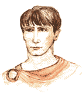
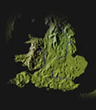
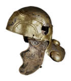
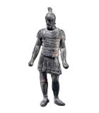

The Vindolanda Tablets
Cerialis, commander fo the fort of Vindolanda, glanced at the memorandum in front of him.
It had been left to him by the previous commander of the fort and provided information on the native Britons beyond the frontier, who were still getting used to Roman rule in the area of Vindolanda.
Cerialis had not had many encounters with the native tribes occupying the land close to the frontier and was therefore quite interested in what his predecessor had to say.
It was clear from the letter that the Britons fought in quite a different way to the Romans. They didn't wear armour to protect themselves as the ROmans did, but they did have cavalry. These were different from Roman cavalry however, as the men did not use swords. Neither did they throw javelins from horseback.
Cerialis thought about the information: the previous commander seemed to be quite dismissive of British fighting abilities, but Cerialis knew that these native people might be useful as recruits into the local units of the Roman army.
This way they changed from being potential troublemakers that must be crushed into defenders of the Roman province of Britain.